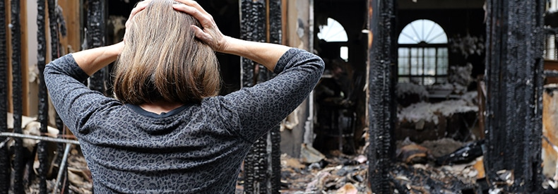
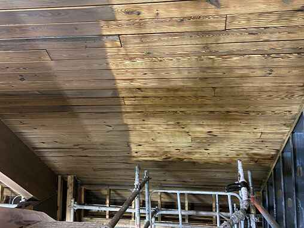

Servicio urgente en Huesca
Limpieza por Incendio en Huesca
Empresa especializada en limpieza y restauración post-incendio en Huesca. Más de 23 años de experiencia. Presupuesto gratis y servicio de urgencia 24h.
Empresa especializada en limpieza y restauración post-incendio en Huesca. Más de 23 años de experiencia. Presupuesto gratis y servicio de urgencia 24h.
La limpieza por incendio en Huesca es un servicio esencial que requiere profesionales experimentados y equipamiento especializado. En ABC Limpiezas, llevamos más de 23 años ofreciendo soluciones integrales de limpieza y restauración post-incendio en Huesca y toda la provincia. Cuando un incendio afecta a su vivienda, local comercial o nave industrial en Huesca, nuestro equipo de técnicos certificados actúa con rapidez para minimizar los daños y restaurar su propiedad a su estado original.
La limpieza profesional después de incendio en Huesca requiere conocimientos técnicos especializados que van mucho más allá de una limpieza convencional. En ABC Limpiezas, nuestros técnicos están formados en las últimas técnicas de restauración post-incendio y cuentan con certificaciones ISO 14001. Trabajamos en todo tipo de inmuebles en Huesca: viviendas particulares, comunidades de propietarios, restaurantes, oficinas, naves industriales y almacenes.
La eliminación de hollín y humo tras un incendio en Huesca requiere técnicas profesionales que garanticen resultados duraderos. En ABC Limpiezas, utilizamos métodos de limpieza en seco, limpieza húmeda especializada y limpieza criogénica con hielo seco según el tipo de superficie afectada. Nuestros técnicos en Huesca evalúan cada caso individualmente para aplicar el tratamiento más adecuado, asegurando la recuperación total del inmueble.
La desodorización tras incendio en Huesca es uno de los aspectos más críticos de la restauración post-incendio. El olor a humo penetra en todos los materiales porosos: paredes, techos, muebles, textiles y conductos de ventilación. En ABC Limpiezas utilizamos generadores de ozono industriales que eliminan las moléculas causantes del mal olor a nivel molecular. Nuestro tratamiento de choque con ozono en Huesca garantiza la eliminación completa del olor, devolviendo un ambiente limpio y saludable a su hogar o negocio.
Cuando hablamos de restauración post-incendio en Huesca, nos referimos a un servicio completo de principio a fin. ABC Limpiezas gestiona todo el proceso: evaluación de daños, desescombro, limpieza especializada de hollín y ceniza, tratamiento de superficies, desodorización con ozono y entrega final. Además, en Huesca nos encargamos de toda la gestión con su compañía de seguros, elaborando informes periciales detallados que facilitan la tramitación de su reclamación.
Solicitar un presupuesto de limpieza por incendio en Huesca es completamente gratuito y sin compromiso. Nuestro equipo se desplaza a su ubicación en Huesca para realizar una evaluación detallada de los daños y elaborar un presupuesto personalizado. Trabajamos con todas las compañías de seguros y le ayudamos con la tramitación del siniestro. Llámenos al 608 320 743 o envíenos un WhatsApp y le atenderemos de inmediato.

Servicio integral de limpieza tras incendio en Huesca. Eliminamos hollín, ceniza y restos de fuego de todo tipo de superficies.

Eliminación total del olor a humo en Huesca mediante tratamientos de choque con ozono industrial.

Tecnología criogénica de vanguardia para la limpieza sin residuos en Huesca. Ideal para maquinaria y superficies delicadas.
Servicio de urgencia en Huesca. Nuestro equipo puede estar en su ubicación en menos de 2 horas.
Experiencia contrastada en limpieza de incendios en Huesca y toda Aragón.
Tramitamos su siniestro con cualquier compañía de seguros en Huesca.
Hielo seco, láser y ozono para resultados impecables en Huesca.
Empresa certificada ISO 14001. Máximos estándares de calidad.
Del desescombro al resultado final en viviendas, comercios e industria en Huesca.

Vea la transformación que conseguimos en cada intervención. Nuestro equipo en Huesca trabaja con dedicación para devolver su propiedad a su estado original. Garantía de satisfacción total.
Presupuesto Gratis"Después del incendio, pensé que mi hogar nunca volvería a ser el mismo, pero el equipo de ABC Limpiezas hizo un trabajo increíble. Dejaron la casa impecable y me devolvieron la tranquilidad. No puedo agradecerles lo suficiente."
"Gracias al equipo de ABC Limpiezas, pudimos reanudar nuestras operaciones de inmediato después del incendio. Su limpieza fue rápida, eficiente y dejó la fábrica en perfectas condiciones para volver a trabajar. Un servicio excelente."
"Tuvimos un incendio en la cocina del restaurante y pensamos que tardaríamos meses en reabrir. ABC Limpiezas vino al día siguiente y en una semana teníamos el local como nuevo. Profesionales de verdad."
El coste de la limpieza post-incendio en Huesca depende de la extensión de los daños, el tipo de inmueble y las técnicas necesarias. En ABC Limpiezas ofrecemos presupuesto gratuito y sin compromiso. Llámenos al 608 320 743 para una evaluación personalizada.
El tiempo de limpieza varía según la magnitud del siniestro. Una vivienda estándar en Huesca puede estar lista en 3-7 días laborables. Locales comerciales e industriales pueden requerir entre 1 y 3 semanas. Le informamos del plazo exacto en la evaluación inicial.
Sí, en ABC Limpiezas gestionamos toda la documentación con su compañía de seguros. Elaboramos informes periciales detallados y nos encargamos de la tramitación completa del siniestro en Huesca. Usted no tiene que preocuparse de nada.
Sí, disponemos de servicio de urgencia 24 horas en Huesca y alrededores. Nuestro equipo puede estar en su ubicación en menos de 2 horas desde la llamada. Contacte con nosotros al 608 320 743.
En Huesca utilizamos las técnicas más avanzadas del sector: limpieza criogénica con hielo seco, tecnología láser, tratamientos de ozono para desodorización, y métodos tradicionales especializados. Cada intervención se adapta a las necesidades específicas del siniestro.
Por supuesto. La desodorización es una parte fundamental de nuestro servicio en Huesca. Utilizamos generadores de ozono industriales que eliminan completamente el olor a humo, incluso de materiales porosos como paredes, muebles y textiles.
Nosotros le llamamos. Rellene el formulario y le contactaremos en menos de 30 minutos.
Sin compromiso. Le llamamos en menos de 30 minutos.